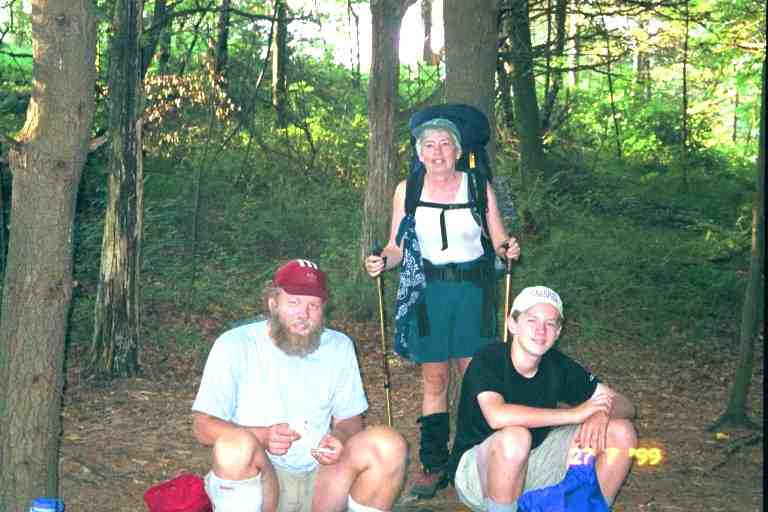
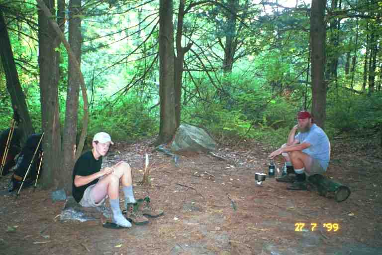
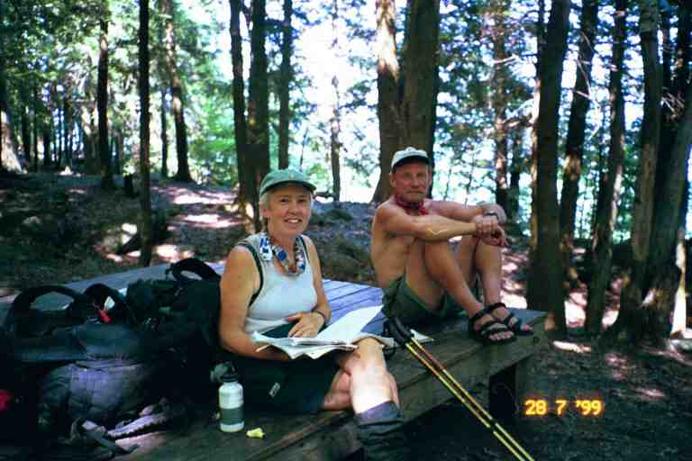
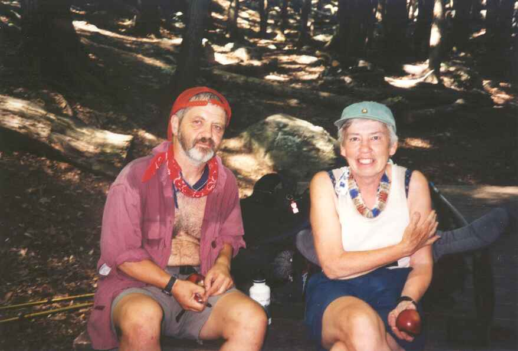
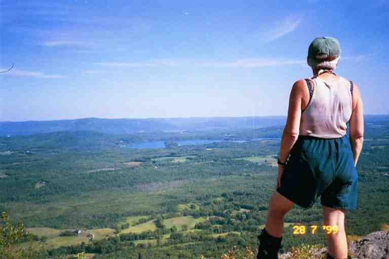
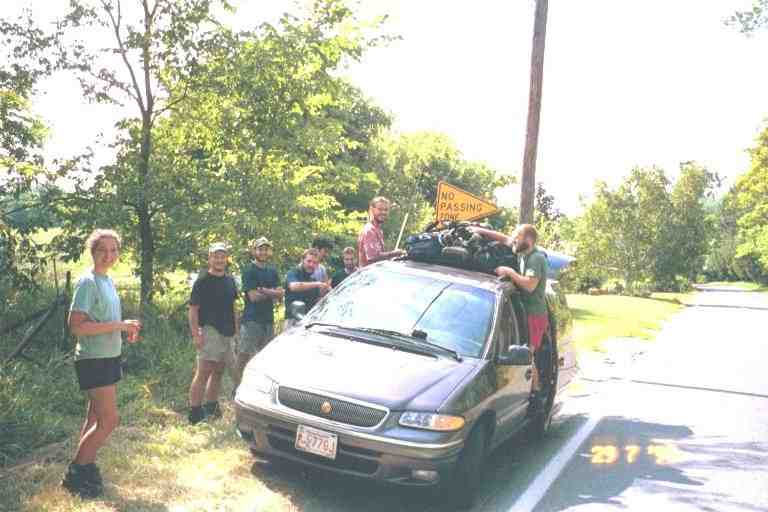

On Monday July 26, Mary drove the four of us back to the trail in Connecticut. We were now carrying our backpacks again. It was up and down all morning although few of the elevation changes were more than 500 feet. It was another hot humid day and we were tired from our late evening at Bill and Mary's place. We had completed 1453 miles of trail and had about 700 to go to Katahdin.
Around noon we came to the Pine Swamp lean-to (most shelters are called lean-tos in Connecticut, Massachusetts and Maine). We spent an hour or more relaxing here, sitting deep in the shelter in the shade. PADDLER slept a few hours. We were joined by a couple of guys from the group of young people we had met earlier in the week, including WINGLEY. Actually WINGLEY is a veterinarian in his early 30's while the rest of them all seemed to be in their early 20's.
During the entire time on the trail, I found myself singing out loud or in my head to pass the time. Sometimes I would start the day with a song in my head and it would not leave. This was particularly aggravating when it was a song that I hated. One song that I liked was with me on and off during most of the trip; it was "Signs" which I recall singing with FOODBAG on the way to Moreland Gap in TN and which I had sung a little with PADDLER. At this shelter I started singing it again and PADDLER joined in and we loudly went through the whole thing. One of the young people asked how we knew it and I said it was a big hit in the mid 1960's by The Five Man Electrical Band from Ottawa. He said it was covered by a group in the early 90's.
**************
I think the reason the song kept coming into my mind is the following verse which makes me think of thru hikers:
"The sign said long haired freaky people need not apply So I put my hair under my hat and went in to ask him why He said you look like a fine outstanding man, I think you'll do So I took off my hat and said: Imagine that... me working for you!"
and of course the refrain is:
"Signs, signs, everywhere signs Blocking out the scenery, breaking my mind Do this, don't do that, can't you read the sign."
And speaking of signs, you may find this excerpt from STITCHES journal in July to be amusing (http://friends.backcountry.net/m_factor/july.html):
***At trailheads, we often see signs from the ATC saying "No Bicycles," "No Motorized Vehicles," or "No Horses." In New York and Connecticut, we saw four unusual signs; "No Llamas," "No Camels," "No Thyself" (in the Graymoor Friary hiker pavilion), and "No Iguanas" (by Bulls Bridge). I keep wondering if we will see more such silly signs. ***
In answer to this question we were with STITCHES at the Seth Warner shelter a few days later where we saw a "No Elvis Impersonators" sign. She really loved these signs and mentioned them again to us when she came to visit us this summer (2000).
*******************
MA's favorite song on the trail seemed to be These Boots are Made for Walking, which I think we also sang with FOODBAG.
Late in the afternoon, we stopped at Hang Gliders View from where we could see the Lime Rock Park race car track. This may be the place that WANDERING TAOIST worked for a few days. We finished this 11.1 mile day at Belter Campsite with PADDLER and SPOTTED BEAR. This site consisted in many numbered separate tenting spots over a large area on the side of a hill. This was in contrast with most campsites or shelters where everyone sets up together in the same clearing. (Picture 1 & Picture 2 of PADDLER &SPOTTED BEAR)


The campsite was full of section hikers but there were no other thru hikers, although WINGLEY and another hiker stopped by to chat and were heading to camp on the edge of the mountain at Belter's Bump, to see the sunset. SINGLEMALT's journal indicates that he stayed here this night but we never saw him.
I went back down the hill to the trail to filter water at a good flowing spring, a treat during this hot dry summer. The privy was another one of those boxes with a toilet seat. It was in the woods beyond our camp site so we ended up directing traffic to help avoid surprises.
We left at 7:15 the next morning and within one mile we were down off the mountain and in the valley along the Housatonic river. Over the next 3 miles, the trail went along the road a few times, crossing the river twice, and made a few detours onto a path along the river. We went by Falls Village named after the Great Falls which we finally came to. The falls are right next to the road and no longer great because of the dam built above, but it is still an impressive place with massive rock formations and cliffs carved out by the river. I could easily imagine how wild the river would be going through here in spring. We took the trail that went off the road next to the falls and met SKINNY and another hiker from his group. The two of them had arrived here last night and had set up their tents on the flat rocks out near the falls. In the middle of the night, the dam gates were opened and they woke up with the water rising around them. They had a mad scramble in the dark to dry ground.
We went the 1000 feet up Mount Prospect through a beautiful hemlock forest then down the other side to US 44. As the trail approached the road, it went through a field and paralleled the road, on the other side of scrub trees, for a short distance finally coming out to the road at an opening through some bushes. Next to the bushes was a cooler with beer and pop supplied by the people in the Big White House nearby. We had refreshments here with SKINNY and WINGLEY and a couple of others from their group. The trail went along the road here in the outskirts of Salisbury CT for about 0.5 miles before taking a side street. We did not turn but continued on another 0.5 miles down the road to The White Hart Inn in town. We arrived at noon, having hiked the nearly 11 miles in under 5 hours.
******************
SINGLEMALT says the following about Salisbury and the inn:
http://users.erols.com/johndsc/JournalPages/week19.htm
*** "Salisbury is the kind of place most people think of when they think of small New England towns, neat as a pin and quaint. The locals here are very friendly, and will stop and chat despite my rather rough appearance. I guess they're used to hikers here. I'm staying at the White Hart Inn, which is much fancier than my wardrobe. It's a typical New England inn, beautifully and tastefully furnished inside, and featuring a full length porch across the front with cushioned white wicker furniture and hanging baskets of pink and white begonias. It is, in fact, the inn where the Bob Newhart show was filmed. I am almost ashamed to go down and have dinner. I guess I'll eat in the "Tap Room" because the "Garden Room", which looks out onto the garden through a wall of French doors, is just a bit too fancy for me, especially the way I'm dressed. The folks who own the Inn don't seem to mind, however. In fact, they give thru-hikers a pretty good discount off their standard room rates. They, like some other innkeepers, may believe that we add a certain curiosity for the other guests to talk about." ***
SINGLEMALT hit it right on. The regular room rate was $129, but the thru hiker rate was only $69. We walked through the front door into a spotless large lobby with shiny hardwood floors and a beautiful wood reception desk. I stood in the doorway for a while, hesitant to enter this beautiful place with my hiking boots and my obviously out of place smelly wet attire.
I finally walked across the room to the reception where they did not react at all to my look and smell. They gave us a room in the main building around the back. We were afraid to touch anything in our room, as it was all frilly and Martha Stewart-ish. The soaps and shampoo were all high class and the room smelled of pot pouri.
******************
We saw STITCHES leaving the parking lot heading back to the trail. We yelled and waved at each other. She had been talking to SINGLEMALT but we missed him. He stayed here this night but we never met him. We took a shower and washed a few things in the sink, as there was no laundromat in town. We walked to town and found a few little quaint cafe's with things like quiche and soup, and then headed for the grocery store. We knew we were in yuppie territory when we saw the IGA grocery was called La Bonne Epicure.
We obtained a couple of fancy subs from the deli at the back of the store and ate them at tables out front with SKINNY and two others from his group. We bought groceries and headed back to the inn. We checked out the prices at the restaurant in the inn and found them very expensive. We informed PADDLER that we decided to have supper that night at one of the cafe's in town although it was not fattening hiker food.
Late in the afternoon we went back to town to check out the shops and the library (which was closed). MA was ready for new boots as the soles on hers were worn giving her little grip walking on boulders. I was very happy with my recently purchased Vasque Sundowners which were lighter and more comfortable than the Montrails we started with. I had no problems breaking in the new boots, which was a major concern with new boots on the trail. MA was therefore considering buying the same kind. The Village Store had Vasque footwear but not sturdy enough for our needs. We decided to try the outfitter in Great Barrington a few days ahead. When I called there I was told that they had a few pairs of Sundowner's for ladies in and around MA's size. I said we would be there in two days.
On the way back to the inn, we ran into PADDLER and SPOTTED BEAR. PADDLER informed us that Bill and Mary would be driving up here to bring him some important papers for a financial transaction and that he would be treating them to supper at the inn. He said he wanted to celebrate his good fortune and wanted to treat us to supper also. It sounded a little like charity but PADDLER was insistent and we knew that this involved quite a financial gain for him, so we accepted.
We went for supper around 7 pm, trying to look presentable in our town clothes ("Life is Good" T-shirt, zip-off shorts and sandals. The evening was wonderful. The restaurant was beautiful, the company enjoyable, the service outstanding and the expensive food was delicious. For dessert I ordered bread pudding at $6, clearly the most expensive bread pudding I ever ate.
***************
I should talk a little about PADDLER and his son, and the financial situation that brought us to supper here.
PADDLER started in Georgia the day after us but we did not meet him until June 2 at the 835 mile mark at a motel in Waynesboro,VA. Our second meeting was on July 2 at Eckville shelter in PA at the 1200 mile mark, the day his 13 year old son joined him to hike for a month. We had hiked together for most of the hot month of July.
We got along pretty well but I think what he liked was the way we treated his son, in fact, he told me on one occasion that SPOTTED BEAR really enjoyed being around us. We liked SPOTTED BEAR and shared PADDLER's opinion that his presence revitalized the hike. It was great to be there when he got excited over some view or occurrence, or to listen to him tell a trail story or read to us from the registers. He loved the registers and would keep up to date on trail news. All the thru hikers were good to SPOTTED BEAR treating him like an equal. He seemed to have a special bond with MA and we would often find them in long conversations or sharing a joke.
The week before, late in the afternoon on July 22 actually, PADDLER and I were following MA and SPOTTED BEAR up a steep hill on the way to Morgan Stewart shelter, when PADDLER and I got involved in a political discussion. We stopped to talk on a boulder, while the other two went on to the shelter. We stood there for 30 minutes, without removing our packs, exposed to the hot sun, having a frank discussion, PADDLER on the right of the spectrum and me on the left. In the end, of course, nobody changed their mind. When we finally got to the shelter, the other two were worried but were in a conversation of their own.
PADDLER is from Old Orchard Beach in Maine and is the senior computer engineer at Fairchild Semiconductors. His wife Wendy is also a computer engineer there, specializing I believe in Web applications. He has a couple of web sites relating to canoes and to hiking with thousands of web pages. He is a devoted scout leader. His hobbies include building wooden canoes and he has built and kept 13 of them, hence his trail name. In the trail registers, he always drew a stickman holding a paddle next to his entries. He had informed me that his company would soon be going public and that he would have some stock options to exercise. He was afraid it would happen while he was on the trail. Well in fact it did happen and an envelope was delivered to his place while his wife was away on business. When she finally found it, time was running out and she did not know how to contact PADDLER. She knew he had been staying with MERRY HIKER and his wife but did not have their names. Fortunately she found an email address for MERRY HIKER and sent an email to Bill. PADDLER found out all about it in Salisbury and he explains in his journal:
http://paddler99.trailstories.com/journal/
*** "I knew that there was something else Wendy needed. It turns out that Fairchild is getting ready to launch its public stock offering, or IPO, and I need to get some paperwork signed and back in by tomorrow! Wendy called the "Merry Hikers' wife, Mary, and Fed Ex delivered the paperwork today. Mary and Bill are driving here tonight. I will buy then a nice dinner for their trouble and I will fax, Fed Ex, call and make all the arrangements I need to make during my "ZERO" day tomorrow. Yee Haw! " ***
So that is how we got a free meal.
******************
The first 6 miles the next day were all uphill, rising 1500 feet with a couple of steep inclines including the final rise of 500 feet to the top of Bear Mountain, the highest mountain in CT. There is a loop trail from a nearby road to the summit of this mountain and as a result we saw many day hikers on and around the mountain including a large group of early teens with a couple of adult leaders, one of whom was exhausted and dragging behind climbing the hill. The view was beautiful from the rocky summit.
We then went along the top of the ridgeline on a wide trail flanked on both sides by scrub bushes. After a long distance we started to wonder if we were still on the trail as we had not seen a blaze in a long time. We kept on going, all the while uncertain of our path. We were finally overtaken by one of the group leaders with some of the teens. He knew the area and confirmed we were on the trail. We soon crossed the border into Massachusetts and made a right turn heading into Sages Ravine, a deep gash in the land with a fast stream cascading down the middle of it. The trail hugged the side of the lush mossy hillside close to the stream, where we met groups of young people swimming in the small pools at the base of rapids and falls. We met TOO OBTUSE at the campsite here. He was camped with a ridgerunner named Robin. They became a couple but we later learned that it only lasted a few months.
On the way through the woods up Race Mountain we came to Bear Rock Stream campsite, where we found SINGLEMALT sitting on the edge of a wooden tent platform. We exchanged warm greetings, not having seen each other for at least a month and a half (maybe even two and a half months since Atkins VA). I took a picture of MA and SINGLEMALT sitting on the platform (attached) and I am now pleased to see on his web site, that he has posted a picture that he took of MA and PA sitting on the same platform. He said that he was staying here for the night as it was a lovely spot. It was near the edge of the cliff with a great view. The stream flowed to the edge of the mountain and just tumbled over. I think that we thru hikers are so goal oriented that we don't stop often enough to just enjoy the views.


SINGLEMALT was not disappointed with his decision to stay as can be seen from this moving description from his journal (http://users.erols.com/johndsc/welcome.htm):
*** "The moon rose over the ridges to the east, and lit up the entire valley. It is, I believe, called the "thunder moon" this month. The lakes below shimmered in silver, and the rock cliffs produced shadows of black and shades of gray across the crevices and protrusions of stone. The whole scene, well lit but devoid of color, reminded me of an Ansel Adams photograph. "Moon Over Hernandez" in particular, comes to mind. This is certainly one of, if not the most beautiful evenings I have yet experienced on the trail. It even grew chilly enough for me to put on a long sleeved shirt, what a pleasant change. There are very few lights in the valley, being mostly forest and farmland, and only occasionally does the distant headlamp of a car show itself before disappearing behind a hill or trees. I bet it looked almost exactly like this 50 years ago. The chill night air, perfectly still, seems to amplify the scent of pine. Tonight, alone on the top of a cliff, I experience perfect peace and harmony with everything around me. I wish everyone else could experience it as well, but I feel no guilt in selfishly enjoying it alone. Moments like this are why I am here." ***
Maybe we should have stayed with him but we wanted to put in five more miles to the next shelter.
We continued on up Race mountain and were overtaken by WOODPACKER whom we had not seen since May 22 when we stayed in the motel in Troutdale and he clogged the drain when he showered. We were really glad to see him. He confirmed the rumour that he had spent 10 days at Rusty's Hollow near the Blue Ridge Parkway and he updated us on some of our old friends that we had not seen in a while. He went on ahead at his fast pace using two heavy long thick sticks as hiking poles.
We went over Race mountain and then climbed the steep trail up Mount Everett, our third mountain of the day. The summit was a long line of boulders that we walked across (picture of MA on Mount Everett attached). JILEBI describes the boulders as follows: "The exposed rock here-a wavy mica schist glistened in some places like the thin foil off a chocolate." (http://trailplace.com/c99journals/315james/315james_index.html)

We came to a firetower and met WALKING HOME who was doing this section south bound with her sister Linda who had joined her for about a week. Her sister had been out here for two days and had a serious blister problem. She could no longer wear her hiking boots and was wearing sneakers. I don't know if she was improperly prepared, or had not broken her boots in or had perhaps tried to do too much, but her feet looked really bad and she was suffering.
We started down the mountain and the trail soon levelled off as it crossed a mountain road and arrived at a pond and picnic area. We then entered the woods and arrived at the Glen Brook lean-to after a further 0.5 miles. We almost missed the shelter as it is not near the trail and the side trail is not very clear. The sign for the shelter had been placed high above eye level making it hard to notice. Like many signs in this area, it had been partially eaten by porcupines. It had been a long 14.2 mile day over three mountains.
A short walk brought us to a lightly wooded sloped area with lots of flat spots for tents. All nine members of the group of young hikers were here, as was WOODPACKER. Everyone was tenting rather than using the shelter which was further on down the hill. We set up our tent on the ground a little above the others. I went on down past the shelter and down a steep ravine to a good flowing stream for our water. At the shelter I met a young man I did not know. He seemed happy to be alone here.
The trees were coniferous with a high canopy allowing us to see far. We made supper and watched the antics of the other hikers. They were sitting on one of the few tent platforms making supper and talking. One of them (HUTCH I believe) began climbing one of the trees. It was tall and straight with brittle branches. There was a lot of teasing and yelling as he noisily went 30 feet up the tree, branches cracking as he went. Finally we heard a loud crack and a large branch came falling out of the tree. It fell on an unoccupied tent, crushing one end and tearing it. I believe it was SKINNY's tent. Everyone started teasing, mimicking what he was going to tell Eureka when he called about the problem with his tent.
A father and son were camped near us; they were out here for a week. A group of young people arrived, went down to get water, came back up and set up out of sight but not out of voice range, as we heard late into the night. The privy was over on the level below us past some of the tents and we had to make sure where we walked, when heading there in the middle of the night.
The next morning the young people were in a hurry. They were to meet HUMMINGBIRD's mother at Mass 41, and go spend a few days at her place in Lincoln Mass. They told me they just wanted to hang out together and maybe bowl or do something similar. They all left ahead of us, except for WINGLEY who sped past us practically at a run, afraid to miss the ride. The descent off the mountain was from an area called Jug End. It was a steep rocky hill with lots of switchbacks, and some very steep descents on rocky steps. I wondered how WINGLEY had made his way down at the speed he was going.
At the base of the hill, the trail went through fields for about a mile, finally coming to the road where we found the group loading the van. They were busy tying all their backpacks to the roof rack as there would be no place inside the van; there would be the 9 of them and HUMMINGBIRD's mother in a 9 person mini van. DIRTY BIRD was talking to a friend of hers who had coincidentally driven here to meet her.

After another 3.5 miles of flat mosquito infested terrain, mostly fields, we came to US 7. We went 0.2 miles down the road to the Corncrib farm stand where we bought some things to drink. The lady called the outfitter 2 miles down the road in Great Barrington to see if he could pick us up but he was alone in his store. We waited some time at the road and finally got a ride with a young girl in a little car that was already packed with stuff. She was involved with outdoor activities and knew the exact location of the outfitter.
The Appalachian Mountain Gear store is a small but well equipped outfitter which shares its building with two other businesses. The owner is a 1988 thru hiker. He was very helpful and soon had MA in a new pair of boots. She also bought the insoles I recommended as the ones that come with hiking boots are notoriously thin.
We left our packs in the locked storage area beneath the building and walked about half a mile to an Italian restaurant recommended by the outfitter. There were a few customers in the small dining area, and we had to sit near other diners. I was very conscious of our appearance and odor but nobody seemed to notice, including the waitress. We had some kind of oven baked sandwiches which were delicious.
Back at the outfitter, we filled our water bags, and bought a milkshake from the dairy bar next door which we consumed at the picnic tables in the adjacent lot. We were exposed to the sun and it was getting very hot. We walked up the road past a supermarket in order to have a better chance at hitching a ride.
It took us some time to catch a ride but finally a man in a station wagon pulling a utility trailer stopped to pick us up. He told us he used to hike a lot in this area and drove us to a side road a mile past where we had come off the trail. He said the trail went down the side road. I was uncertain but was unwilling to contradict someone doing us a favor, so we went around back and took our packs out, but then I realized that there were no blazes here. I asked him to go back down the highway so we piled our stuff back in and he made a U-turn and took us back. We had been right, the trail had crossed the highway and gone back into the fields. The man had also been right, however, as we eventually came to the same side road and followed it across a bridge over the Housatonic.
JILEBI tells of catching a ride in this area from a man who attempted the trail in 1998 and ran out of money in Great Barrington. He was still here.
The rest of the afternoon we slowly climbed 1200 feet up the sides of two small mountains, June and East, skirting around them without getting to the summits. We stood on the vertical ledges on East Mountain and looked at the valley down below. In the early evening, we walked along a narrow rocky ridge line among rock formations called the Ice Gulch. In this area we came to a steep side trail down to the right which lead about fifty feet to the Tom Leonard lean-to. We had done 14.3 miles. The shelter was nestled with its back against the hill below the trail. WOODPACKER had set up his tent inside the shelter to escape the mosquitoes which had been ferocious all afternoon. He also expected rain as the high humidity had clouded up the skies which now appeared threatening.
In order to get water, I climbed a few steps to a tent platform at the top of a rock. I walked along until I came to another tent platform constructed in the open on a rocky ledge looking out over the valley. I continued and reached the privy, where the trail then made a sharp turn and went down a steep a rock strewn ravine and then along a few switchbacks, finally arriving at small stream. I was glad I had my 6 litre dromedary bag so I would have enough water for supper and to start the day tomorrow, and would not have to come all the way down again.
GALAHAD was here and set up his tent on the first platform, leaving the one with the view for us. It would have been a great place but it looked like a storm was building so we declined. We cooked supper at the edge of the shelter and set up our tent right next to the shelter. During the night a thunder storm with high winds came through, causing branches to fall all around our tent. It made us very nervous but everything turned out allright.
The next day we were again bothered by mosquitoes as we hiked down the mountain and almost immediately started to climb again. The trail skirted the eastern end of Benedict Pond at the four mile mark. We decided to take the 0.5 mile side trail along the southern side of the pond to a public beach. This was a long deviation for us as we rarely went that far off the trail, except for town stops. It was still early in the morning so there were not many people here. We spread our stuff on a picnic table near the beach and I went swimming fully dressed, as usual. There were two treats here, a pop machine and a washroom with an outdoor shower (although it was cold). We spent quite a bit of time here relaxing and were joined by GALAHAD.
The rest of the day was through more mosquito territory which JILEBI describes as follows:
"It's funny how a little creature like a mosquito can drive all coherent thoughts out of your head. The whine of their wings coupled with the sharp pricks on the skin effectively obliterate your sense of time and space. I have no recollection of my hike to Jerusalem Road except that I could not pause for even a second. I know that the area was boggy and the exposed roots of the trees lay like coiling serpents amidst the black mud and ferns." (http://trailplace.com/c99journals/315james/315james_index.html)
JILEBI mentions Jerusalem Road because that is the place that the mosquitoes would apparently disappear. Unfortunately our goal for the night was Shaker Campsite situated between two arms of Jerusalem road. On the way we went by both Mount Wilcox lean-tos. The south lean-to was in terrible shape, as it was being chewed up by porcupines.
We arrived at Shaker Campsite late in the afternoon and found GALAHAD inside his tent on one of the two platforms. The mosquitoes owned this place; it was unbelievable. We doused ourselves in DEET and quickly put up our tent on the other platform and made supper. I filtered water in a swarm of bugs from a stream that crossed the trail a little further on. We were quickly into our tent and settled down for the night and it was not yet 7 o'clock. A group of 4 young weekenders arrived and seemed disappointed that we were already in our tents. They quickly put on long jackets for protection and had their tents up in minutes. They did not bother to cook supper. Fortunately the privy was very close by so we did not have far to run. We took care of business very quickly.
The next day was the last day of July and, as promised, we would be walking out of mosquito country. The next segment includes lots of trail magic and a hospital visit.